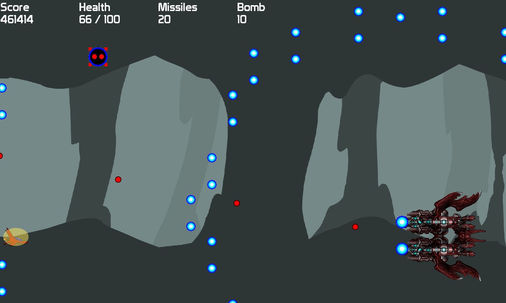

Target Xplosion
Details
Target Xplosion est un shoot'em up sur lequel je travaille depuis plus d'un an. Il est développé en C++ et repose sur la bibliothèque LunatiX.
Une demo est disponible en bas de la page.
Système de jeu
Plusieurs niveaux constituent le jeu. Le joueur démarre un niveau avec un rang déterminé qui correspond à un niveau de difficulté. 3 rangs sont disponibles:
- A : Le rang le difficile
- B : Le rang de base
- C : Le rang le plus facile
Selon le score obtenu, le niveau de difficulté s'adapte. Aucun rang n'est attribué au premier niveau. Le rang n'est attribué qu'à la fin du premier niveau.
Plus le rank est élevé, plus les ennemies sont résistants, et ont plus de points de vie. En contre-partie, le joueur est plus puissant, mais les projectiles font plus de dégats des deux côtés.
Commandes
- Flèches directionnelles: Déplacer le vaisseau
- W: Tir basic
- X: Missile
- C: Bombe
- SHIFT gauche: déplacement lent
- ESCAPE : Quitter le niveau/jeu
- RETURN : continuer (dans l'ecran résultat)
License
Target Xplosion est disponible sous la Licence GNU GPLv3. Les contenus additionnels (images, font, musiques) sont sous licence Creative Commons. LunatiX est sous licence zlib/libpng.